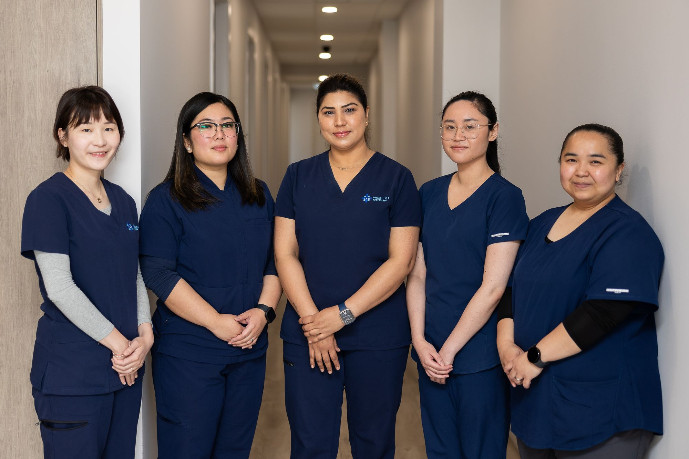

Tap a doctor to see more
Each doctor's special interests and the procedures they perform are shown on the Find Care page. Photos and full bios can be added to these cards.
Doctors at 427
Our team caring for patients at the 427 Whitehorse Road site.
Doctors at 411
Our team caring for patients at the 411 Whitehorse Road site.
Our support team
Care doesn't happen alone. Our nurses, allied health partners and reception team keep everything running smoothly.

Our nursing team: Elsa, Geraldine, Mamta, Angelica and Celeste
Practice Nurses
Elsa, Geraldine, Mamta, Angelica and Celeste provide full-time nursing support for procedures, health checks, immunisations and care coordination.
Allied Health Partners
A network of allied health professionals working alongside your GP for joined-up care.
Reception Team
Friendly, helpful front-desk staff to guide your bookings, records and enquiries.
Find a time with our team
Book online, start a telehealth consult, or call reception to be matched with the right doctor for you.